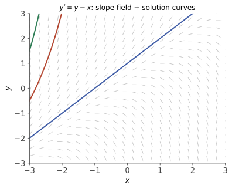

本页目录
常微分 I · 一阶方程与解的理论
ODE 是"用变化率描述世界"的语言。本页两部分：一阶方程的求解工具箱（五大类型，按识别→套路走），以及理论基石存在唯一性定理——它顺手兑现了数值 III 承诺过的压缩映像思想。
学习层：同一个初态，未来一定只有一条吗？
1. 具体情境：一辆可以“等一会儿再出发”的车
考虑初值问题
常值解 \(y\equiv0\) 合法；但对任意等待时间 \(a\geq0\)，分段函数
也满足方程与初值。函数右端连续，所以存在性并不意外；它在 \(y=0\) 附近却不对 \(y\) 局部 Lipschitz，因此 Picard–Lindelöf 的唯一性证书失效。注意“定理条件不满足”只表示定理不再担保，不能单凭这一点断言每个问题都不唯一；这里的不唯一由明确的多条解曲线作证。
2. 先预测：存在、唯一与延拓分三张票
- \(y'=y,\ y(0)=1\) 的右端既连续又局部 Lipschitz；穿过初值的两条不同解曲线能否相交？
- 对上面的平方根方程，等待 \(a=0,1,2\) 会得到几条不同的解？拼接点处左右导数是否一致？
- \(y'=y^2,\ y(0)=1\) 的右端十分光滑；这是否足以保证解对所有 \(t>0\) 都存在？
3. 最小模型：三个问题需要三种证书
- 局部存在：连续右端可由 Peano 定理给出局部解，但不保证唯一；Picard–Lindelöf 以对状态变量的局部 Lipschitz 条件同时给出局部存在与唯一。
- 唯一：比较的是同一初值附近的全部解，不是某个数值算法只画出一条轨迹。平方根例中的 \(y_a\) 是解析反证。
- 最大延拓：即使局部唯一，解仍可能在有限时刻爆破或跑出方程定义域。\(y'=y^2,\ y(0)=1\) 的最大向前区间是 \((-\infty,1)\)。
无 JavaScript 时的静态读法：
| 方程 | 连续 | 对 \(y\) 局部 Lipschitz | 本例结论 | 不能越界声称 |
|---|---|---|---|---|
| \(y'=y,\ y(0)=1\) | 是 | 是 | 局部唯一，且显式解 \(e^t\) 全局存在 | 一次 Euler 轨迹不是定理证明 |
| (y'=\sqrt{ | y | }, y(0)=0) | 是 | 否（在 0 附近） |
| \(y'=y^2,\ y(0)=1\) | 是 | 是 | 局部唯一，但 \(y=1/(1-t)\) 于 \(t=1\) 爆破 | 局部唯一不等于全局存在 |
实验揭示后可切换三类方程、改变观察窗与 Euler 步数；平方根模型会并排展示等待时间 (a=0,1,2) 的三个解析分支。有限步数值轨迹只诊断当前离散化；存在唯一性与最大延拓仍由定理假设和解析解负责。
4. 模型边界
本实验只处理三个一维自治方程；Peano 与 Picard–Lindelöf 的一般陈述需要在初值附近选定矩形，并分别检查连续性、对状态变量的一致局部 Lipschitz 条件。刚性、多值微分包含、随机微分方程和数值稳定性不由这三个 toy 覆盖。
1. 求解工具箱（识别类型是全部功夫）
| 类型 | 特征 | 解法 |
|---|---|---|
| 可分离 | \(y' = f(x)g(y)\) | \(\int\frac{dy}{g(y)} = \int f(x)dx\) |
| 齐次 | \(y' = \varphi(y/x)\) | 换元 \(u = y/x\) → 可分离 |
| 一阶线性 | \(y' + p(x)y = q(x)\) | 积分因子 \(\mu = e^{\int p\,dx}\) |
| Bernoulli | \(y' + py = qy^n\) | 换元 \(z = y^{1-n}\) → 线性 |
| 恰当方程 | \(M dx + N dy = 0\)，\(\frac{\partial M}{\partial y} = \frac{\partial N}{\partial x}\) | 求势函数 \(u\)：\(du = 0 \Rightarrow u = C\) |
一阶线性的通解公式（用得最多，值得记结构而非背式）：两边乘 \(\mu = e^{\int p dx}\) 后左边恰是 \((\mu y)'\)：
结构读法：通解 = 齐次通解 + 非齐次特解——线性方程的普适结构（下一页高阶版、高代线性方程组同构）。恰当方程不恰当时找积分因子（只依赖 \(x\) 或 \(y\) 的两个判别式，查表级知识）。
2. 存在唯一性定理（理论基石）
定理（Picard–Lindelöf） 初值问题 \(y' = f(x, y),\ y(x_0) = y_0\)：若 \(f\) 在初值附近的矩形内连续，且在该矩形内关于 \(y\) 一致满足 Lipschitz 条件（\(|f(x, y_1) - f(x, y_2)| \leq L|y_1 - y_2|\)），则在某个较小区间上存在唯一解。
证明思路（三步，泛函 I 将正式收编）：1. 初值问题 ⟺ 积分方程 \(y(x) = y_0 + \int_{x_0}^x f(t, y(t))dt\)；2. 右端定义算子 \(T\)，在小区间上 \(T\) 是压缩映射（Lipschitz 常数 × 区间长 < 1）；3. 压缩映像原理给唯一不动点——Picard 迭代 \(y_{n+1} = T y_n\) 收敛到解（还是可计算的构造性证明，数值 III 不动点迭代的老家）。
唯一性失效的名例：\(y' = \sqrt{|y|},\ y(0) = 0\)——除 \(y \equiv 0\) 外，对任意 \(a\geq0\)，令 \(y=0\)（\(x\leq a\)）、\(y=(x-a)^2/4\)（\(x\geq a\)）都给出一条解；不能把 \(x^2/4\) 不分区间地写到负半轴上，因为那里导数符号不对。\(\sqrt{|y|}\) 在 0 处不满足 Lipschitz。物理读法：这个具体系统允许"同一初态有多种未来"；非 Lipschitz 本身只是唯一性定理失去担保，不自动证明每个系统都不唯一。
解的延拓：局部解可延拓到"跑出定义域或爆破"为止；\(y' = y^2\) 的解 \(y = \frac{1}{C - x}\) 在有限时间爆破——非线性方程解的寿命可以有限（与线性方程全局存在对照）。
3. 定性预览：不解方程看解

很多方程解不出，但方向场（每点画斜率 \(f(x,y)\) 的小箭头）与平衡点（\(f = 0\) 的常数解）已透露大局。一维自治方程 \(y' = f(y)\)：平衡点处 \(f'(y^*) < 0\) 稳定（扰动衰减）、\(> 0\) 不稳定——第三页稳定性理论的一维预演。Logistic 方程（人口模型，建模页主角）：
平衡点 \(0\)（不稳）与 \(K\)（稳，环境容量）——不用解方程就知道"任何正初值都趋于 \(K\)"；可分离法也能显式解出 S 形曲线，两条路互相印证。
🔗 衔接：梯度流 \(x' = -\nabla f(x)\) 是"连续时间的梯度下降"（优化 II——学习率 \(\to 0\) 的极限），平衡点=驻点、稳定性=极小性；数值解法（Euler/RK4）在数值 IV；概率版（加噪声的 ODE = SDE）在随机过程 IV 与扩散模型（comfy 课 02）。
4. 典型例题
例 1（一阶线性全流程） \(y' + \frac{y}{x} = \frac{\sin x}{x}\)：\(\mu = e^{\int dx/x} = x\)，\((xy)' = \sin x\) ⇒ \(y = \frac{C - \cos x}{x}\)。
例 2（换元识别） \(y' = \frac{y}{x} + \tan\frac{y}{x}\)：齐次型，\(u = y/x\) 得 \(x u' = \tan u\)，分离得 \(\sin u = Cx\)，即 \(\sin\frac{y}{x} = Cx\)。
例 3（Picard 迭代亲手转两圈） \(y' = y,\ y(0) = 1\)：\(y_0 = 1\)，\(y_1 = 1 + \int_0^x 1\,dt = 1 + x\)，\(y_2 = 1 + x + \frac{x^2}{2}\)，……——迭代逐项长出 \(e^x\) 的 Taylor 级数。存在性证明与幂级数解法在此握手。\(\blacksquare\)
下一页：高阶线性方程——特征方程三型解、共振，与"解空间是线性空间"的代数真相。